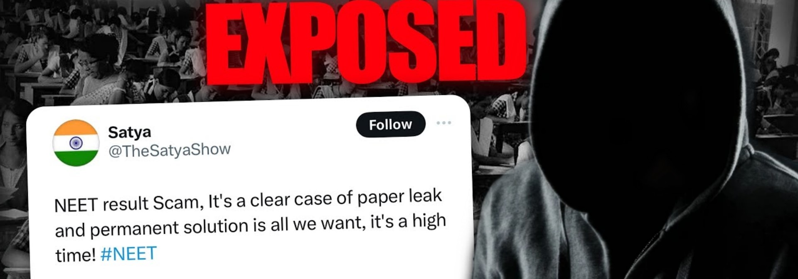

In the lead-up to the NEET UG 2024 exam, a video claiming a paper leak went viral, causing widespread panic among students and parents. This incident was further exacerbated by reports from Gujarat and Bihar. In Gujarat, a teacher and two others were arrested for allegedly assisting candidates in cheating. One of the teachers from Gujarat was reportedly arrested for accepting a bribe of ₹10 lakh to facilitate cheating, adding another layer of scandal to the controversy. Meanwhile, in Bihar, 13 individuals were taken into custody for their alleged involvement in leaking question papers.
Amidst these alarming reports, the National Testing Agency (NTA) has firmly refuted all allegations of a question paper leak for NEET UG 2024. The NTA has maintained that the exam process was secure and that any rumors of leaked papers are baseless. Despite these assurances, the wave of distrust and concern among students and parents has not subsided.
Adding fuel to the fire, a new controversy has emerged regarding the awarding of grace marks. Parents have labeled the practice a scam and have lodged complaints with officials, demanding relief for the affected students. They have also raised doubts about the timing of the results, which were announced on June 4, instead of the expected date of June 14. This discrepancy has led to accusations that the results were announced early to avoid scrutiny from officials and the union government.
In an unprecedented turn of events, 67 candidates have been awarded All India Rank 1 in the NEET 2024 exam. However, the NTA has declared their ranks for counseling purposes in decimals, raising questions about the criteria used for this distribution. Many of these 67 students belonged to the same batch and center, and even had similar roll numbers, further fueling suspicions of irregularities.
In one examination center in Haryana, an astonishing number of students scored the full 720 marks. Even more bizarre, one student reportedly received 721 out of 720 marks, a clear impossibility. When questioned, the faculty at this center claimed that they had given grace marks to students. This explanation has done little to quell the outrage and disbelief among other candidates and their families, who are demanding an investigation into these dubious results.
In yet another troubling incident, students who had opted for the Hindi medium in one examination center received English question papers instead. When they requested a change to Hindi papers, the teachers initially complied but still handed out English papers. Upon further requests, the staff locked these students in a room. When the students attempted to escape, they were beaten by the staff. One of the students managed to call a journalist, who leaked disturbing images from inside the center, exposing the mistreatment. This incident has sparked outrage, with calls for justice for the affected students.
The controversies surrounding the NEET UG 2024 exam have left many students feeling disillusioned and cheated. Those who have worked hard and studied based on past cutoffs now find themselves at a disadvantage, unable to secure deserving placements in colleges. The allegations of corruption and paper leaks have cast a shadow over the integrity of the examination process.
At Collegers, we believe it is crucial to raise our voices against these injustices. The main body responsible for the exam must be held accountable for any lapses in security and transparency. Students who have been genuinely affected by these controversies deserve justice and a fair chance at their future.
"Truth Uncovered, Reality Restored."